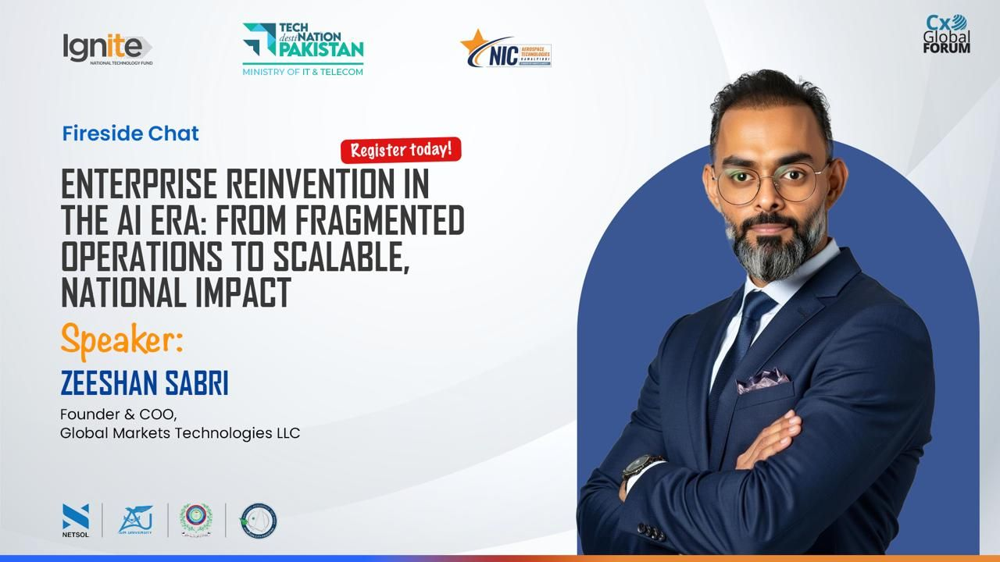
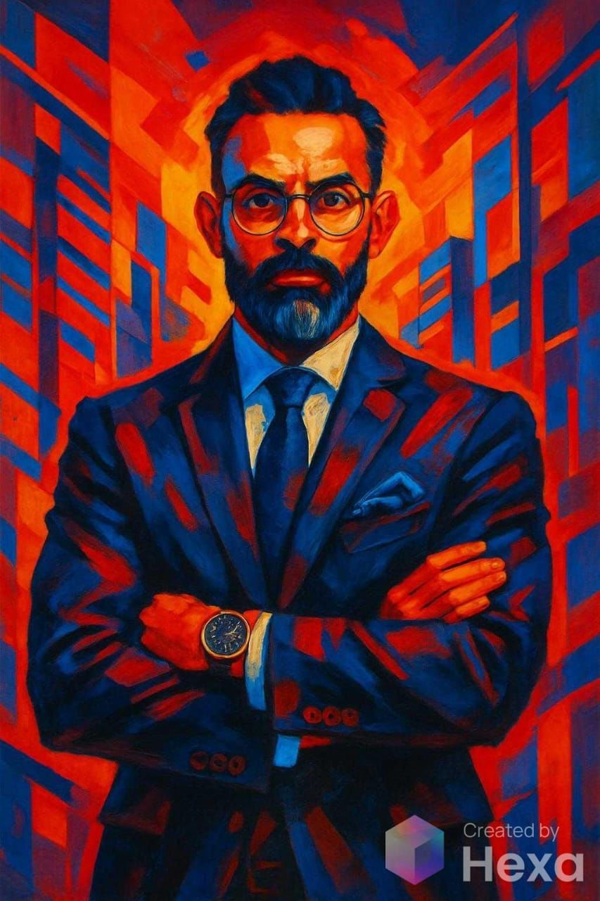

Featured Writing
The Investment Paradox
Why organisations cannot fix structural chaos with code, frameworks, or training alone.
This is the public layer, featured thinking, live sessions, media proof, and field presence from the work behind ClarityOS.
Built as an active media page, not just an archive. The goal is to make the public footprint feel alive, current, and credible, like you are posting, speaking, and shaping the conversation in real time.

A stronger media layer makes the broader body of work feel active, visible, and anchored in proof.
Why organisations cannot fix structural chaos with code, frameworks, or training alone.
Why AI success depends on leadership, integration, governance, and capability, not just tooling.

Public-facing delivery anchored in lived transformation work.

The body of work is not theoretical, it is built in live operating environments.

Proof signals matter when media, speaking, and advisory all reinforce one narrative.
Keynotes, leadership programmes, executive roundtables, and transformation-focused sessions across the GCC and beyond.